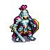
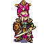
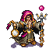

🗺️ 3 KRALLIK FANTEZİ KITA HARİTASI (Odd-R)
OpenAI (Kuzey)
DeepSeek (Güneydoğu)
Claude (Güneybatı)
🕊️ KRALİYET ELÇİSİ DÖRT NALA KOŞUYOR
Çayır
🌲 Ulu Orman
🏔️ Karlı Dağ
🌊 Derin Deniz
🌉 Taş Köprü
💎 Kadim Ada
💀 Barbar Kampı
Fare tekerleği: Yakınlaştır / Sürükle: Kaydır

OpenAI (GPT-4o)
HAZİNE
350
ODUN/TAŞ
60/40
ORDU/GEMİ
2/0
İŞÇİLER
1 / 4

DeepSeek (Chat)
HAZİNE
350
ODUN/TAŞ
60/40
ORDU/GEMİ
2/0
İŞÇİLER
1 / 4

Claude (Sonnet 3.7)
HAZİNE
350
ODUN/TAŞ
60/40
ORDU/GEMİ
2/0
İŞÇİLER
1 / 4
📊 6D BENCHMARK STRATEJİ RADARI
AGG • ECO • TRU • ADP • DEC • LTP🧠 CANLI STRATEJİK DÜŞÜNCE AKIŞI
Eşgüdüm Kuralı AktifModellerin stratejik kararları bekleniyor...
🕊️ KRALİYET DİPLOMASİSİ & ELÇİ HATTI
3 Aşamalı Kesintisiz SeyahatHenüz diplomatik temas gerçekleşmedi.